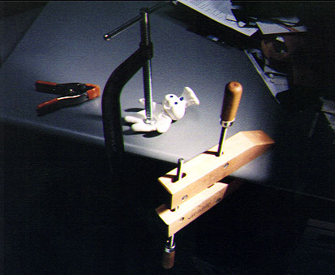
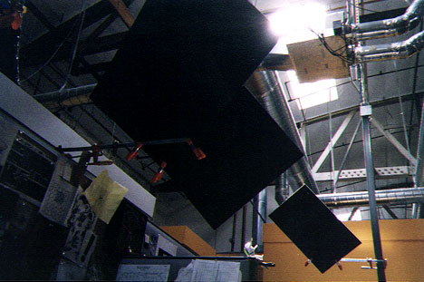

|
Clamps
 I love clamps because they make it so easy to stick things together temporarily, and they don't leave behind an annoying residue like duct tape does. For example, here are some shadow cards I constructed at work out of black foam core. They keep direct sunlight from the skylights off my monitor. The shadow cards are held up by supports made entirely of clamps.  Those little orange hand clamps they have at the hardware store are especially cool, and they're relatively cheap. I've been collecting clamps since college, and now I have about a dozen different kinds. Clamps are essentially Lego for adults. The wackiest clamp I have seen so far is called the Auggie Gripper. From the web site it looks like it's at least two feet long. It appears to be a pretty serious clamp. I think it's intended primarily for clamping together equipment in hospitals. However, I also get the impression it could be used for connecting slippery zoo animals to each other or uniting disparate elements of our nation's political system. Also, check out my excellent web page about glue! Return to Drew's Home Page |